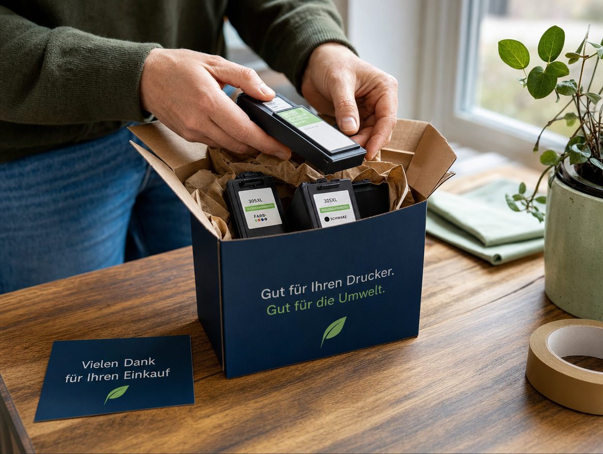

100 % recycelte Original-Patronen & -Kartuschen – kompatibel mit HP, Brother, Epson und Canon. Persönlich abgeholt, wieder befüllt und zu Ihnen zurückgebracht.
Ob Tintenpatrone oder Tonerkartusche – wir befüllen ausschließlich Original-Verpackungen und prüfen jede Patrone vor dem Versand.
Original befüllt, 100 % recycelt, für Tintenstrahldrucker aller gängigen Marken.
Zur Kategorie PatronenHochwertig recycelt für Laserdrucker – zuverlässig und umweltschonend.
Zur Kategorie Kartuschen
Wir leben Umweltschutz: Seit 2001 recyceln wir Tintenpatronen und Tonerkartuschen in bester Qualität – und befüllen dabei ausschließlich Original-Patronen, statt generische Nachbauten zu verkaufen.
Heute sind wir persönlich für Sie unterwegs: Eine Nachricht per Telefon oder WhatsApp genügt, wir holen Ihre leeren Patronen ab und liefern sie frisch befüllt wieder zu Ihnen nach Hause, ins Büro oder ins Geschäft.